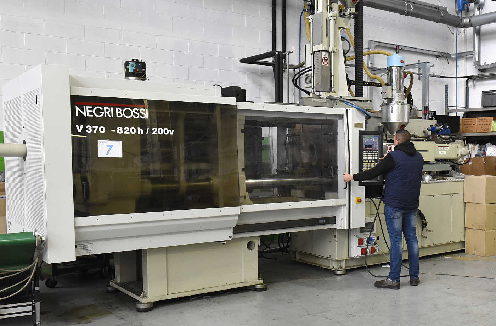

Stampa ad iniezione
Per lo stampaggio ad iniezione di materie plastiche, S.T.L. si avvale di presse monocomponenti e bi-componenti da 80 t. a 820 t. Il controllo qualità ed un ufficio metrologico dedicato, permettono di rispettare le specifiche richieste e l’individuazione di eventuali anomalie nella produzione, correggendole secondo i parametri ottimali di produzione. Le resine termoplastiche utilizzate per lo stampaggio ad iniezione sono certificate alla fonte per garantire prodotti stampati di alta qualità ed estrema affidabilità.